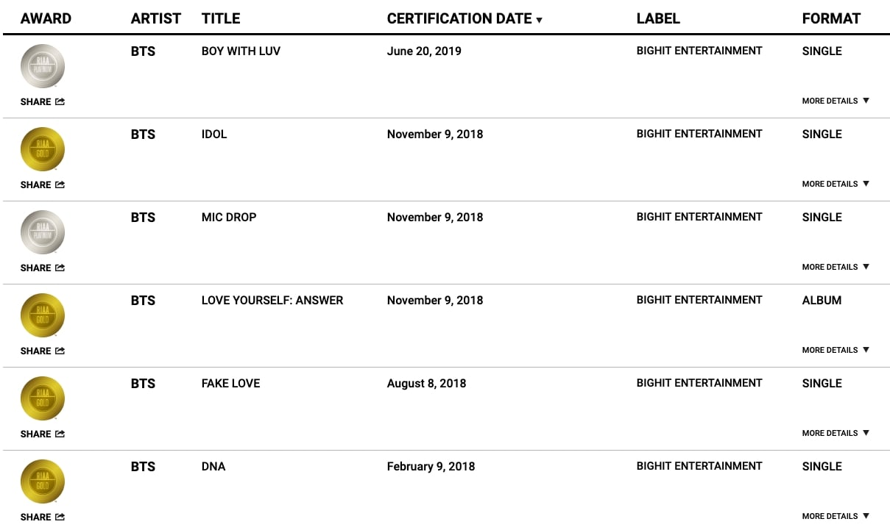

Awards and Achievements
BTS has received many awards and honors, including 33 Mnet Asian Music Awards, 29 Melon Music Awards, 24 Golden Disc Awards, 20 Seoul Music Awards, 6 Korean Music Awards, 19 Gaon Chart Music Awards, 9 Billboard Music Awards, 6 American Music Awards, and 6 MTV Video Music Awards. BTS is also the first group in history to win Top Song Sales Artist at the Billboard Music Awards, as well as 5 consecutive wins for Top Social Artist.
Having sold over 20.3 million albums on the Gaon Music Chart, BTS is the best-selling artist in South Korean history, surpassing Shin Seung-hun's record of 17 million albums. In South Korea, BTS holds five Multi-Million albums and four Platinum streaming singles.
As the first Korean group to receive an RIAA certification, BTS has one Double Platinum single, two Platinum albums, three Platinum singles, two Gold singles, and one Gold album in the United States. BTS has a large social influence and as of 2021, has attained 26 Guinness World Records, including the world record for most Twitter engagements. To date, they have spent 210 weeks at number one on the Billboard Social 50 chart. In October 2018, BTS was awarded a fifth-class Hwagwan Order of Cultural Merit from the President of South Korea for their contributions in spreading Korean culture and language.
In 2019, members of BTS were invited to become members of the Recording Academy in honor of their contributions to music and as part of a push to help diversify Grammy Award voters. On November 7, 2019, BTS became the first K-Pop act to remain on the Billboard 200 for a whole year.